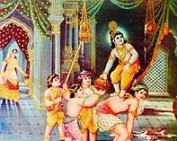
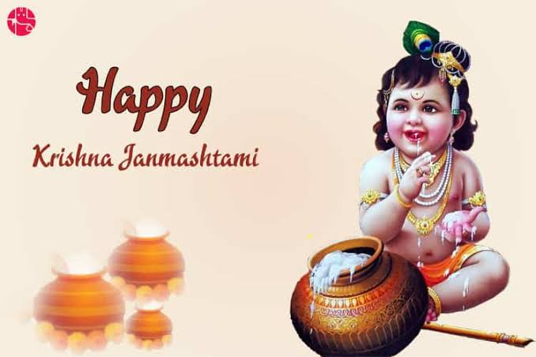

|  |
Janamashtami
|
|
Home | Contact Us | feedback |
|
Enjoy The Moments.... |
Janamashtami:
|
|
 In Andhra Pradesh, recitation of shlokas and devotional songs are the characteristics of this festival. Another unique feature of this festival is that young boys are dress up as Krishna and they visit neighbors and friends. ... Eatables along with milk and curd are prepared to make offerings to Krishna.
Janmashtami is a grand festival celebrated all over India to commemorate the birth of Lord Krishna, who is believed to be the eighth incarnation of Lord Vishnu. ... Sri Krishna is considered as the one of the most powerful human incarnations of the Lord Vishnu. He was born around 5,200 years ago in Mathura.
It is believed that the Krishna is the eighth child of his mother, Devaki so, Krishna Janmashtami is celebrated on eighth day. According to the Hindu mythology, the evil king Kansa ruled Mathura. To extend his empire he married his sister with Vasudeva, the Yadu king.
|
Home|Privacy Policey|Terms of Service|Feedback
2024 & copy Festivalis of India|All Rights Reseverved
Designed by Praveen kumar